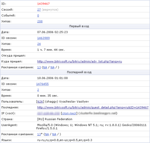

В этом разделе
На странице (Веб-аналитика -> Посетители -> Список посетителей) отображен список посетителей сайта.
Фильтр
| Параметр | Описание |
|---|---|
| ID, логин, имя, фамилия* | Позволяет отобрать зарегистрированных посетителей по маске их строк логина, имени, фамилия или ID. |
| ID посетителя* | Позволяет отобрать посетителей сайта (в т.ч. незарегистрированных) по маске их ID. |
| Зарегистрирован | Определяет, отображать ли только зарегистрированных посетителей, незарегистрированных или всех. |
| UserAgent* | Данное поле позволяет отфильтровать посетителей по используемым ими браузерам. |
| IP адрес* | Отбор посетителей по IP адресу последнего входа. |
| Языки* | Отбор посетителей по языкам, установленным в браузере (для Internet Explorer: меню Tools –> Internet Options –> Languages). |
| Страна* | Отбор посетителей по стране (определяется по IP адресу). В квадратных скобках можно ввести двухсимвольную аббревиатуру страны (напр., RU, BY, US). |
| Дата первого захода | Интервал для отбора посетителей по дате первого посещения. |
| Дата посещения | Интервал для отбора посетителей по датам посещений сайта (обрабатывается таблица сессий, поэтому искомые данные, возможно, будут уже очищены). |
| Дата последнего захода | Интервал для отбора посетителей по дате последнего посещения. |
| Страница* | Позволяет найти посетителей по сайту и первым страницам первого входа и
последним страницам последнего входа. В выпадающем списке (ошибка 404) можно указать, отображать ли только запросы несуществующих страниц. |
| Пришедших по рекламной кампании | Флаг, позволяющий отфильтровать посетителей, первый либо последний вход которых произошел по рекламной кампании. |
| ID рекламной кампании* | В этом поле можно через запятую указать ID рекламных кампаний для первого либо последнего входов. |
| referer1/referer2* | Идентификаторы рекламной кампании первого либо последнего входов, соответственно, referer1 и referer2. |
| referer3* | Дополнительный параметр рекламной кампании первого либо последнего входов. |
| Событий | Интервал для количества событий, инициированных искомыми посетителями. |
| Сессий | Интервал для количества сессий (заходов на сайт), инициированных искомыми посетителями. |
| Хитов | Интервал для количества хитов, инициированных искомыми посетителями. |
| Добавил в избранное | Флаг, позволяющий отфильтровать посетителей, добавивших сайт в избранное. |
| Логика между полями | Переключатель, определяющий механизм поиска записей.
|
* - для данных полей вы можете воспользоваться специальными логическими выражениями.
Для того чтобы установить фильтр по заданным критериям поиска, нажмите кнопку Найти. Для отображения всех данных нажмите кнопку Отменить.
Контекстная панель
| Кнопка | Описание |
|---|---|
| Excel | Экспортирует данные из таблицы в формат MS Excel. |
| Настроить | Позволяет перейти к диалогу настройки внешнего вида отчетной формы. |
Таблица
| Колонка | Описание |
|---|---|
| Меню действий |
Нажатие на кнопку действий в строке конкретной поисковой
системы отображает меню, содержащее команды:
|
| ID | ID посетителя. Если ID выделен красным, данный идентификатор является вашим. |
| Пользователь | Данные зарегистрированного посетителя: [ID] (логин) Имя Фамилия. Ссылка на [ID] открывает форму редактирования пользователя. |
| Сессий | Количество сессий (заходов на сайт) посетителя. Если количество сессий равно 1, посетитель впервые зашел на сайт; в противном случае – посетитель относится к категории вернувшихся. Ссылка на показателе открывает список сессий с фильтром, установленным на ID этого посетителя (не пользователя). |
| Событий | Количество событий, инициированных посетителем. Ссылка на показателе открывает список событий с фильтром, установленным на ID этого посетителя. |
| Хитов | Количество хитов (загруженных страниц) посетителя. Ссылка на показателе открывает список хитов с фильтром, установленным на ID этого посетителя. |
| Первый заход | Время первого посещения сайта. |
| Последний заход | Время последнего посещения сайта. |
| IP | IP адрес посетителя. Ссылка на значении открывает страницу поиска информации по этому адресу (http://www.whois.sc/IP ). |
| Страна | Страна посетителя. |
Пример таблицы
Нажмите на рисунок, чтобы увеличить
Подробный просмотр данных посетителя
Этот отчет открывается в новом окне при выборе команды Подробно в меню действий какого-либо посетителя.
| Поле | Описание |
|---|---|
| ID | ID посетителя в базе |
| Сессий | Количество сессий, открытых посетителем. |
| Событий | Количество событий, инициализированных посетителем. |
| Хитов | Количество просмотренных страниц. |
| Первый вход | |
| Дата | Дата начала первой сессии посетителя. |
| ID сессии | ID первой сессии. |
| Хитов | Количество просмотренных страниц в первой сессии. |
| Время | Время первой сессии. |
| Откуда пришел | Ссылающаяся страница в момент открытия первой сессии. |
| Куда пришел | На какую страницу посетитель зашел в момент открытия первой сессии. |
| Рекламная кампания | Если в первой сессии был прямой заход по рекламной кампании, в данном поле отображаются данные рекламной кампании: [ID] referer1 / referer2 / referer3. |
| Последний вход | |
| Дата | Дата начала последней сессии посетителя. |
| ID сессии | ID последней сессии. |
| Хитов | Количество просмотренных страниц в последней сессии. |
| Время | Время последней сессии. |
| Пользователь | Регистрационные данные посетителя в последней сессии. |
| Последняя | Последняя просмотренная страница. |
| IP (хост) | IP адрес посетителя и его хост. |
| Страна | Страна посетителя (определяется по IP посетителя). |
| UserAgent | UserAgent браузера посетителя. |
| Рекламная кампания | Последняя рекламная кампания, по которой посетитель сделал прямой вход. |
| Языки | Языки установленные в браузере посетителя. |
| Cookie | Содержимое файла cookie посетителя на его последнем хите. |
Пример данных посетителя
Нажмите на рисунок, чтобы увеличить
| © «Битрикс», 2001-2008, «1C-Битрикс», 2008 | 1С-Битрикс: Управление сайтом |